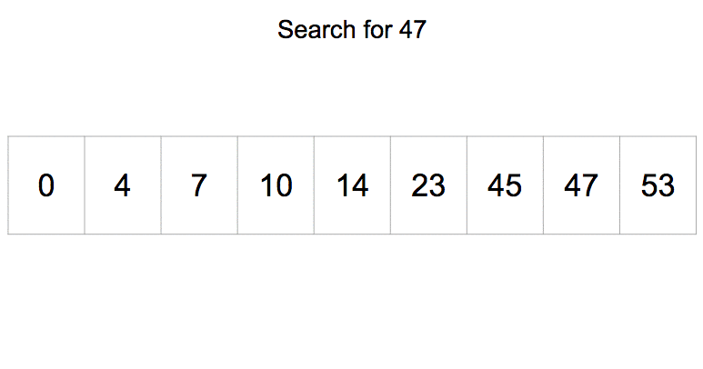

Hello!
Hi, I'm Victor Sarca!
Welcome to my Digital Portfolio!
Check out my Java tutorials, read about me and my accomplishments, check out my cool ideas, or read the bibliography if you have nothing better to do...

Check out my Java tutorials, read about me and my accomplishments, check out my cool ideas, or read the bibliography if you have nothing better to do...
I started writing math contests in grade 2, starting with the Thales contest from Mathematica Centrum. Since then I have achieved mostly perfect scores on easier contests and great score on more difficult contests, including a 6/15 on the 2023 AIME and a qualification for the 2021 CJMO.
I learned to program almost 8 years ago, starting with python. Since then I have gained experience in many languages, from interpreted languages such as Javascript, to compiled languages such as C, and a few esolangs.
I started writing computer science contests with the Junior CCC in grade 8, which I did perfect on. In 2023, I did both the Junior and the Senior for a total of 120 points - 75 on Junior and 45 on Senior. I also managed to get partials on S5 about half of an hour after the contest was over, which means if I didn't do Junior I would have made CCO. I've also achieved a perfect score on USACO Silver, promoting me to USACO Gold.
My favourite activities are playing tennis, videogames, and grinding math and competitive programming.
My favourite programming language is C. I dislike Java and Object Oriented Programming in general. Java has too many overcomplicated features which aren't necessary, yet the language does not allow the user to manipulate pointers. A programming language shouldn't be as complicated as Java; if people have problems understanding the language then that means it isn't very good. I like C because it is simple yet robust, and integrates so well with the inner workings of all operating systems. Unlike Java, C can actually open files on my device and will never tell me that my Documents folder is empty and that my file doesn't exist. Java does that every single time.

My favourite data structure is the heap, specifically the binary heap. A heap is used to find the smallest/largest element in some data. A simple implementation of mine provides a method for adding an element, and a method for removing the smallest element from a heap. Although binary heaps are the worst type of heap, they are the simplest to understand and to implement, and after reading about other types of heaps I decided they weren't worth the effort to learn. Other heap types offer only slight improvements in exchange for a ridiculously complicated algorithm; no thank you. A binary heap stores all elements in a binary tree, which may simply be the first N elements of an array. Every node in the tree is guaranteed to be smaller than the nodes below it, thus making the topmost node the smallest. To remove this node, however, another node must fill the small it leaves behind. Usually that last element of the array is moved to the top of the heap and then sorted down the heap to its correct position. When adding an element to the heap, it is appended to the end of the array, and then sorted up the tree. Since the height of the tree is log(N), both methods have a time complexity of log(N).
My favorite animal is the groundhog. I took this picture in Quebec during the summer break of 2021.

Finally, my favorite game is called Stephen's Sausage Roll. It's a very difficult puzzle that was made in 2016, about cooking sausages on a grill in a tight space. I stopped playing it when school started, but I hope to finish the game this summer.
Note: These tutorials assume a basic understanding of Java and good experience with programming in general. Please refer to another source to familiarize yourself with the Java programming language if necessary.
Java is an object oriented language, which means that all running code is part of an object. Written code forms classes which can be instantiated to create objects. The class of an object defines its methods and variables.
A Java class declares and defines the variables and methods pertaining to it. A class may either be used
statically (as explained below) or used to create an object using the new keyword. All
variables and methods must pertain to a class; no code should be written
outside the coundary of the class.
Every object has an identity, state, and behaviour.

In order to prevent maluse of an object, Java classes can restrict access to methods and variables inside them.
There are three levels of access:
public - can be accessed by anythingprivate - can only be accessed by the object itselfprotected - can be accessed by subclasses of the object, and the object itself (see
Unit 2)Common Java practice guards variables from misuse with encapsulation. Encapsulated variables should always be private. In order to access them, public get and set methods are created, with all necessary safeguards to ensure proper use of the class.
Here is an example Java class with an encapsulated variable:
public class MyClass
{
private int myNumber;
public MyClass(int num)
{
myNumber = num;
}
public int getNumber()
{
return myNumber;
}
public void setNumber(int num)
{
myNumber = num;
}
}
In MyClass, the integer variable myNumber is declared private, and as such is
not visible outside the object. The value of myNumber can only be read or replaced using
the public methods in the class.
There are two types of these methods:
getNumber() setNumber() Note: These tutorials assume a basic understanding of Java and good experience with programming in general. Please refer to another source to familiarize yourself with the Java programming language if necessary.
Inheritance is a feature of Java that allows code to be reused. A Java class can inherit the methods and variables of up to one other class, and any number of interface classes. This means that the class will have all the methods and variables of the class it extends, called the parent/superclass, and can use those methods. However, private members of the parent class will remain inaccessible.
Here is an example of a class extension in Java:
public class Bungalow
{
private int floorArea;
public Bungalow(int area)
{
floorArea = area;
}
public int getArea()
{
return floorArea; // Line A
}
}
public class House extends Bungalow
{
private int numFloors;
public House(int area, int floors)
{
super(area); // See Polymorphism below
numFloors = floors;
}
public int getFloors()
{
return numFloors;
}
}
The House class extends Bungalow, which means that a House object will have an
integer
floorArea and a method getArea() to access it. Since floorArea
was declared private in Bungalow, a House object cannot directly access that variable. However, the
public method getArea() can be accessed by both the House class and externally since it is
declared public.

In Java, a subclass may override a method from the parent class, completely replacing the code of the parent class method. This is achieved by declaring a method with the same name, parameters and return value as the superclass's method. When the method is called in an object of the subclass, the new code will run.
When overriding a method or defining a constructor, the previous definition of the method can be
accessed from the superclass using the super keyword. A call to super is optional in all
but the constructor, which will default to super() if no super call is explicitly defined.
Super methods must be called before other code runs.
Super methods work as follows:
super at the start of a constructor with appropriate arguments will run the
code from the matching constructor in the superclasssuper.method_name() at the start of a method will call the matching
method in the superclass For example, a BetterBungalow class could be declared as such:
public class BetterBungalow extends Bungalow
{
private int basementArea;
public Bungalow(int area, int basement)
{
super(area);
basementArea = basement;
}
public int getArea()
{
return super.getArea() + basementArea;
}
}
The getArea() method in BetterBungalow overrides the method with the same name
in the Bungalow class. A call to super.getArea() will run the Line A in the
Bungalow class, which will return the value of floorArea. The value is then added to the
basementArea to calculate the total area of the home.
Note: Similarly to super(), constructors may also call this() to run another
constructor in the same class.
There are two types of classes that cannot be instantiated, but are instead used as superclasses.
A Java interface is a class with very little code. It may only contain
static final
variables and method declarations. It contains no constructors or instance variables, and only static
methods can be defined. An interface is a template for a class, providing a guideline for its
implementation. Although a class can only extend one other class, it can implement as many interfaces as
needed.
An abstract class is a partially defined class. Methods in classes that are declared
without
implementation must be defined as abstract. If a class contains any abstract methods the class must also
be abstract.
Here is an example of an interface and an abstract class:
public interface Combinable
{
public Combinable add(Combinable other);
public Combinable subtract(Combinable other);
}
public abstract class Box
{
private int bottomArea, boxDepth; // Measured in cm^2 and cm respectively
public Box(int area, int depth)
{
bottomArea = area;
boxDepth = depth;
}
public int getArea()
{
return bottomArea;
}
public int getDepth()
{
return boxDepth;
}
public abstract int getVolume(); // Box class does not implement this method
}
public class Sandbox extends Box implements Combinable
{
private int sandVolume; // Amount in cm^3
public Sandbox(int area, int depth, int sand)
{
super(area, depth);
sandVolume = sand;
}
public int getSand()
{
return sandVolume;
}
/** Returns the space left in the sandbox in cm^3 */
public int getVolume()
{
return getArea()*getDepth() - sandVolume;
}
public Combinable add(Combinable other)
{
if (!(other instanceof Sandbox))
return new Sandbox(getArea(), getDepth(), sandVolume);
return new Sandbox(getArea(), getDepth(), sandVolume + other.getSand());
}
public Combinable subtract(Combinable other)
{
if (!(other instanceof Sandbox) || sandVolume < ((Sandbox)other).getSand())
return new Sandbox(getArea(), getDepth(), sandVolume);
return new Sandbox(getArea(), getDepth(), sandVolume - ((Sandbox)other).getSand());
}
}
The Combinable interface defines the methods add and subtract,
which have another Combinable as an argument and return a Combinable. These methods are not implemented
in the interface, but rather the implementation is left for the subclass. The abstract class
Box provides functionality for the area and depth of the box, but does not implement the
volume method, since the box does not know what it will contain. The Sandbox class extends
Box and implements a Combinable class, inheriting the functionality of both.
It then has to implement the abstract methods for adding, subtracting, and calculating the volume of a
Sandbox.
In Java, an object may be stored in a variable of its type, or in a vairable of a parent type. In the
Sandbox class, when implementing the add and subtract methods the
arguments are Combinable variables. However, since the Sandbox class implements a
Combinable a Sandbox can be passed as an argument to the function.
When an object is stored in a different variable type, it is called upcasting. The object remains
unchanged, but is treated by Java as an object of the variable type. For example, if a
Sandbox object were stored in a variable of Combinable type, then the method
getSand() could not be accessed, since Combinables do not have a method by that name. In
order to access Snadbox methods, the object must be casted back to a Snadbox object.
Note that casting will only work with a type that the object has inherited. Casting a
Combinable to a Sandbox is not possible because a Combinable does not have the
same methods and variables as a Sandbox.
Note: These tutorials assume a basic understanding of Java and good experience with programming in general. Please refer to another source to familiarize yourself with the Java programming language if necessary.
If multiple instances of an object or data type exist with some correlation to each other, they may be
stored in an array. An array of a data type can hold multiple instances of it, to be accessed and stored
more easily. This is how to declare, initialize, and access an array of 20 int variables.
int[] myArr;
// int myArr[]; // Also valid
// myArr = new int[]; // No elements
// myArr = new int[20]; // 20 elements, not set
// myArr = {1, 2, 3, 4, 5}; // 5 set elements
myArr = new int[20]{1, 2, 3, 4, 5}; // 20 elements, the first 5 are set
System.out.println(myArr[2]);
This declares, creates, and initializes an array myArr. Notice how the [] can be
placed before or after the array name with the same effect. The array can be initialized in a number of
ways, specifying the size and/or contents of the array. Finally, myArr[x] will access the xth
element of the array. Note that the first element of an array is always element 0; myArr[0] =
1.
An Arraylist in Java is a type of list that behaves very similar to an array. It allows all
normal array functionality, while having variable length. It hold hold objects of a specified type in a
certain order. See below for an example of how an Arraylist can be used.
Arraylist<String> names = new Arraylist<String>();
Arraylist<Integer> numbers = new Arraylist<>(); // Compiler infers type from variable declaration
names.add("John");
names.add(0, "Mary");
System.out.println(names.size()); // 2
System.out.println(names.get(0)); // Mary
System.out.println(names.remove(1)); // John
System.out.println(names.size()); // 1
The Arraylist's type is specified inside a pair of <>. Note that the
compiler will infer the type of the Arraylist from the variable type, so when creating
numbers, the type of Arraylist is not specified and still compiles without error. The
example also demonstrates the methods of an Arraylist; adding, inserting, getting, and removing an
element, as well as getting the size (number of elements) in the Arraylist.
Note: These tutorials assume a basic understanding of Java and good experience with programming in general. Please refer to another source to familiarize yourself with the Java programming language if necessary.
Note: This tutorial in particular contains advanced concepts and as such assumes a better understanding of programming than normal. Although comments are provided, no step-by-step walkthough of the code will be given.
Sorting is the process of putting all the elements of an array in order. There are many algorithms to do this, but only the most common are listed here.
Bubble sort loops through an array, swapping adjacent elements if they are in the wrong order. This process repeats until the array is sorted, which is when no further swaps can be made. Every swap changes the order of exactly one pair of items, from an incorrect state to a correct state; this makes the array closer to being sorted after every swap. If the array is not sorted, there is always at least one possible swap, which guarantees that the array will be sorted when the algorithm is finished. Below is an implementation of Bubble sort on integers.
void bsort(int[] arr)
{
boolean didSomething = true;
while (didSomething) // While a swap was made
{
for (int i=1; i<arr.length; i++) // For every pair of elements at indices i and i-1
{
if (arr[i] > arr[i-1]) // Check order of elements
{
// Swap elements
arr[i] ^= arr[i-1]; arr[i-1] ^= arr[i]; arr[i] ^= arr[i-1];
}
}
}
// Array is sorted here because no further swaps were made
}

Mergesort sorts an array using the merge operation, which takes two sorted arrays and merges their contents to become a larger sorted array. By merging every pair of elements in an array, following by every pair of pairs, and so on, every element will be merged into one final sorted array. Note that an individual element is a sorted array of one. Below is an implementation of recursive Mergesort.
void msort(int[] arr) // For user
{
msort(arr, 0, arr.length); // Sort the array from start to finish
}
// Sorts the elements in interval [left,right)
void msort(int[] arr, int left, int right)
{
// Exit condition
if (left + 1 == right) return; // Sorting sequence of length 1, exit
// Sort halves
int middle = (left+right)/2;
msort(arr, left, middle, temp); // Sort lower half
msort(arr, middle, right, temp); // Sort upper half
// Merge operation
int[] temp = Arrays.copyOfRange(arr, left, middle);
int lindex=0, rindex=middle, index=left;
while (lindex < temp.length && rindex < right) // While there are still elements to merge
{
if (arr[rindex] < temp[lindex]) // Right element is smaller, insert that one
arr[index++] = arr[rindex++];
else // Left element is smaller or equal, insert that one
arr[index++] = temp[lindex++];
}
for (; lindex < temp.length; lindex++) // Add all remaining elements in left array
{
arr[index++] = temp[lindex];
}
for (; rindex < right; rindex++) // Add all remaining elements in right array
{
arr[index++] = arr[rindex];
}
// Interval [left,right) is now sorted
}

Quicksort sorts an array by dividing the array into smaller arrays and then fusing them together again, just like Mergesort. However, quicksort does not merge the elements back together, instead sorting them when breaking up the array.
For a given array, quicksort will pick a random element as a pivot. It will then divide the array into two; one array for elements less than or equal to the pivot, and another for elements greater than the pivot. It amy also keep track of how many elements are equal to the pivot. After sorting both arrays, they are assembled back together in order; first the array of elements less than the pivot, followed by all elements greater than the pivot. Once quicksort has broken an array into individual items, the array is guaranteed to be assembled back together in sorted order. Below is an implementation of a version of quicksort called left-right pointers, which divides the array in-place, without extra storage like mergesort.
void qsort(int arr[]) // For user
{
qsort(arr, 0, arr.length); // Sort the array from start to finish
}
// Sorts the elements in interval [left,right)
void qsort(int[] arr, int left, int right)
{
// Exit condition
if (left + 1 == right) return; // Sorting sequence of length 1, exit
// Setup
int pivot = arr[left + (int)(Math.random()*(right-left))]; // Pick random element for pivot
int equals = 0; // The number of items equal to pivot
int lpoint=left, rpoint = right-1; // Left and right pointers for array looping
// Split array into less than pivot and greater than pivot
while (lpoint < rpoint)
{
// Swap the two elements at lpoint and rpoint, first counting if one is equal to pivot
if (arr[rpoint] == pivot) equals++;
arr[lpoint] ^= arr[rpoint]; arr[rpoint] ^= arr[lpoint]; arr[lpoint] ^= arr[rpoint];
// Find the next pair to swap
while (lpoint < rpoint && arr[lpoint] <= pivot) lpoint++; // Find the next element to be switch in the left array
while (lpoint < rpoint && arr[rpoint] > pivot) rpoint--; // Find the next element to be switch in the right array
}
if (arr[lpoint] <= pivot) lpoint++; // lpoint is now the first item in rpoint
// Sort the subarrays
qsort(arr, left, lpoint-equals);
qsort(arr, lpoint, right);
// Interval [left,right) is now sorted
}

To find an element in an array, a searching algorithm is used. It will determine whether an element can be found in an array, and where it is. The two most common search algorithms are listed here.
Sequential search operates on any array, that does not have to be sorted. It will check every element of the array until it finds one that matches, or reaches the end of the array. Below is an implementation of sequential search.
int ssearch(int[] arr, int item)
{
for (int i=0; i<arr.length; i++)
{
if (arr[i] == item) return i; // Index of first occurence of item
}
return -1; // -1 if not found
}

Binary search operates on a sorted array. It will begin by checking the middle of the array; if the element there is too large, it knows the search item is in the lower half of the array, and if the element in the middle is too small, then it knwos the search item is in the upper half. Binary search will iterate on the array until the middle element is the element desired, or it has found the location where the search item should be inserted. Below is an example of iterative binary search.
int bsearch(int[] arr, int item)
{
int left = 0, middle, right=arr.length;
while (left < right)
{
middle = (left+right)/2;
if (item == arr[middle]) return middle;
if (item < arr[middle]) right = middle; // item is lower than middle
else left = middle+1; // item is above middle
}
if (arr[left] == item) return left; // Found element
return -1-left; // Element not found
}

Note: These tutorials assume a basic understanding of Java and good experience with programming in general. Please refer to another source to familiarize yourself with the Java programming language if necessary.
Recursion is when a method calls itself in a loop to complete a task. Recursive algorithms are usually easier to write than iterative loops, but are harder to debug and are slower than their counterparts. Check the Sorting and Searching tutorial for some examples of recursive functions.
A recursive algorithm should always finish at some point; that is, there must be an input for which the code does not make any subsequent calls, and the function must be guaranteed to converge to that input. Recursive algorithms also have the downside of a recursion limit, which is a Java specific problem. There is a hard limit on the depth of recursion in Java, which can be found with the recursive method below. In other languages, such as C, there is no limit so the function can recurse until there is no more memory.
int count=0;
void getRecursionLimit() throws StackOverflowError
{
count++;
recursionLimit();
}
void printRecursionLimit()
{
count = 0;
try
{
getRecursionLimit();
}
catch (Exception e)
{
System.out.println("Recursion limit: " + count);
}
}

A call to printRecursionLimit will output the maximum recursion depth of Java.
All recursive methods can be converted to an iterative method, thus eliminating the overhead cost of the method calls. However, this is not recommended because the resulting code will be much mroe complicated. An iterative version of the recursive method will store all the variables of the recursive method in a stack. When a call is made, the new parameters are added to the stack. When a method returns, the top of the stack is removed. Thus, the top of the stack always contains the data relating to the current running iteration, and all previoud function calls have their data stored beneath that. Finally, similarly to the way the computer manages function calls, if the method requires computation before and after recursing, a variable can be added to the method to track what part of the function was executing when the function call was made.
In summary, a recursive method can be made iterative by simulating the stack and callbacks yourself; this increases the performance of an algorithm significantly. This is most easily done for recursive functions with no return value, since implementing a return system is annoying, or for recursive functions that only have one recursive call, which makes organisation much easier.
My first ever programming project was in 2015, when I first learned Scratch and Python. I noticed that my Raspberry Pi had some games on it written in Python, and managed to find the source code in the files. Since I didn't understand what programming was (who could blame a grade 3 for that), all I did was copy and paste all the snake code to make another one. After fixing an enormous amount of errors, I could control a green worm with the arrows keys and a blue worm of my own creation with WASD. The worms of course couldn't collide, but it was still a lot of fun to play with friends. And of course, after 8 years, I have no idea where the file is (not on my computer for sure). So if you happen to find a file named "WORMY 2P.py", please let me know.
Since 2015, I have countless unfinished projects in python, and then C, which are not worth showing here. Until 2021, I have nothing to show.
I took my first ICS course in grade 9, with a perfect score on CCC Junior already under my belt. For my ICS2 final project, I was tasked to create an interactive storybook in Processing 3. I chose to make my slideshow about electricity. Below are some screenshots of the application, which contains a whopping 3709 non-empty lines of code! Click here to download the storybook, if you want to explore it further.


One year after ICS2 is ICS3. For my final project, I had to create a web application with some academic purpose. I chose to make a learning tool for artificial intelligence, which would provide some simple and well documented code for creating and training a neural network. Since we only had a few weeks, the final product is very finnicky, but works. I decided to train the network on the MNIST database of handwritten digits, and after a few minutes it can achieve over 99% accuracy.
For this project I worked in a group. The UI was created by Felix Zhao and Lukas Li, and the artificial intelligence was written by me. The AI was written without any external libraries other than gpu.js for hardware acceleration. The files provided below remain unchanged since the time of submission. The testing.html file has a lot fo testing code, but I consider it easier to use than the GUI.
LearnAI.js can be downloaded here.
The testing page will take a while to load because it
will need to load the MNIST database in the largest
size that browsers can handle. The AI can be controlled through console commands, although it will begin
training by itself. There is also an ability to upload an existing file, which will allow you to load
the neural network I trained in a few hours. For more
information,
you can read LearnAI.js, or call NeuralNetwork.print() and DeepLearner.print()
to output the full documentation in the console. The testing.html file also contains the method
testOnTrainingData, which is useful for evaluating the network.
I have many small projects from the past few years. I have chosen this project in particular to show here because it looks cool. Note that since this is a GUI project with many dependencies, it will be very difficult to run the source code. Also, I have to change the physical code in order to change the ant/turmite, so the executable is pretty useless. You can only view a singular type of ant!
The goal of this project was to simulate Langton's ant, and the complicated turmites. The program can simulate any ant or termite specified. Below are examples of the original Langton's ant, and of my favorite variation: it looks amazing, and is the second-simplest type of turmite; only 2 colors and 2 states.
Currently I am exploring noise generation and the Wave Function Collapse algorithm. These are small projects which won't have anything to show, but will be useful to learn. I am also thinking of applying noise generation to terrain generation, to try to get some real-looking terrain and maybe another project to work on.
The algorithms I have recently learned about are Perlin, Simplex, and Worley noise, and Wave Function Collapse. I am also implementing a set and multiset and similar structures for competitive programming.
Although I have yet to implement Wave Function Collapse, I have been successful in my attempts to generate noise, and have even created an unfinished demo game using noise for terrain generation. The game is not availabel for download, because it only compiles for my computer; on other computers it has problems with dlls. Furthermore, the source code is of no use because the project depends on SDL2, a lightweight low-level cross-platform graphics interface.
After ICS3 is ICS4. For my final project, I created a game together with 2 colleagues. As the project leader, I was responsible for assigning tasks and coordinating my group members, as well as writing the majority of the code. Writing a game in Java was a difficult task, as the default Java windowing tookit is very unsuitable for creating a game, and my object-oriented programming approach turned out to be very time-consuming. Our final project has lessons, puzzles, combat, sound, and more. Overall, I'm happy with how I finished highschool computer science. Next: university!
Click here to download the most recent version of this project from GitHub. Since this page is being made before the final version is complete, it is not possible to provide a direct download or embed.
Kernighan, & Ritchie. (1988). The C programming language. Prentice Hall.
Lesson 1 OBJECTS AND CLASSES. Google Classroom, uploaded by Valentina Krasteva, 20 Apr 2023, classroom.google.com.
Lesson 1 OBJECTS AND CLASSES. Google Classroom, uploaded by Valentina Krasteva, 20 Apr 2023, classroom.google.com.
L2 OOP and Inheritance S23. Google Classroom, uploaded by Valentina Krasteva, 20 Apr 2023, classroom.google.com.
Arrays Lesson S23. Google Classroom, uploaded by Valentina Krasteva, 20 Apr 2023, classroom.google.com.
Array util list S23. Google Classroom, uploaded by Valentina Krasteva, 20 Apr 2023, classroom.google.com.
Sorting Searching Lesson S23. Google Classroom, uploaded by Valentina Krasteva, 20 Apr 2023, classroom.google.com.
Lesson Recursion S23. Google Classroom, uploaded by Valentina Krasteva, 20 Apr 2023, classroom.google.com.
Inheritance, interfaces, polymorphism S23, uploaded by Valentina Krasteva, 20 Apr 2023, classroom.google.com.